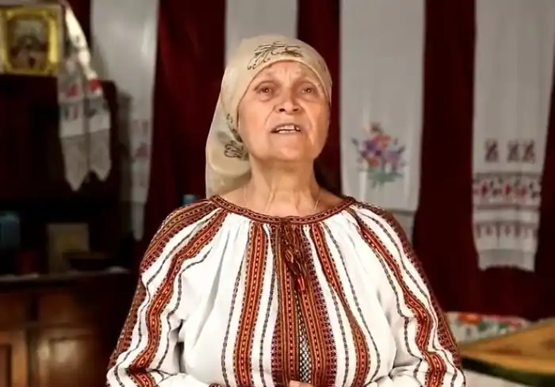

Антоніна Іванівна Литви́н (дошлюбне Гармаш, 20 квітня 1940, Кременчук — 23 січня 2022) — українська письменниця, поетеса, громадська діячка.
Народилася 20 квітня 1940 року в місті Кременчуці Полтавської області, в родині річковиків Івана та Клавдії Гармашів. Виросла в селі Старому Іркліївського району, Полтавської області, зараз затопленому водами Кременчуцького водосховища. 1957 року закінчила Васютинську середню школу, працювала друкаркою, радисткою в Черкасах. Писала вірші і прозу, займалась творчою роботою, 1962 року, за рекомендацією Спілки письменників України, вступила до Київського державного університету ім. Т. Г. Шевченка на філологічний факультет. Здобула фах філолог, викладач української мови і літератури.
За радянської влади разом з чоловіком, бандуристом Василем Литвином, потрапила до списку неблагонадійних. Звільнена з видавництва "Молодь", родину разом з дітьми виселено з Києва в село Гребені Київської області. 1989 року з чоловіком стали одними із засновників Стрітівської кобзарської школи. Антоніна Гармаш-Литвин була автором програми виховання майбутніх батьків-матерів, за якою в багатьох школах вже проводиться навчання. Нею розроблена також програма естетичного виховання дітей. Заповітна мрія Гармаш — створити малу Академію народного українського мистецтва. Займалася творчою і громадською діяльністю, була заступницею голови товариства "Просвіта" ім. Т. Г. Шевченка Кагарлицького району.